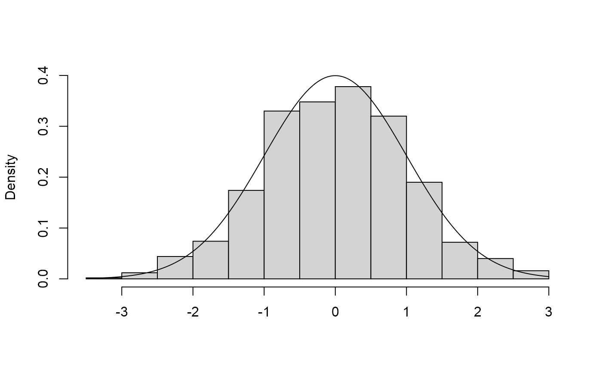
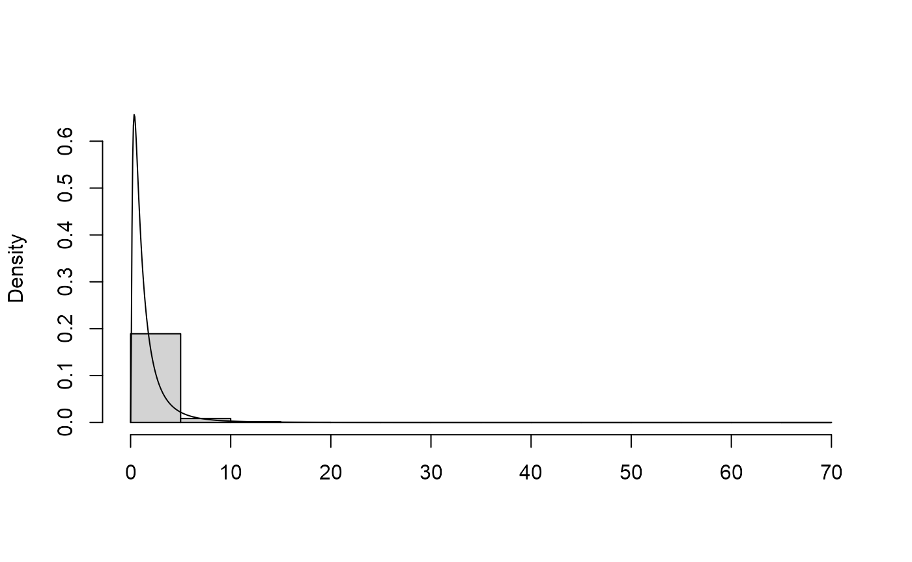
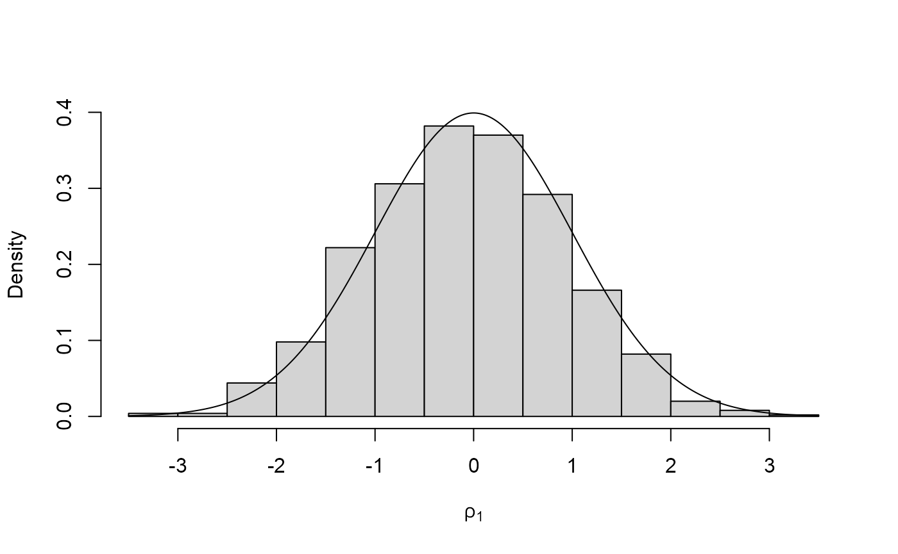
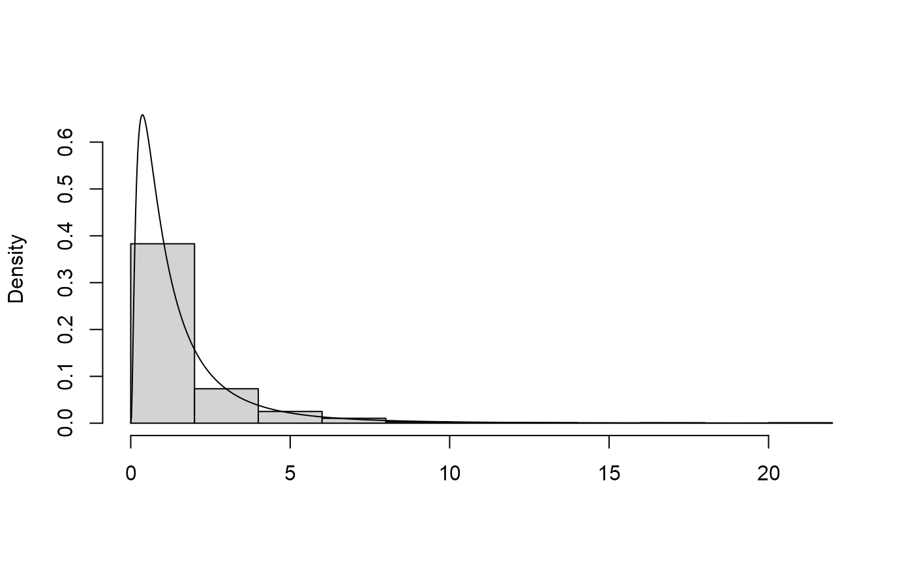
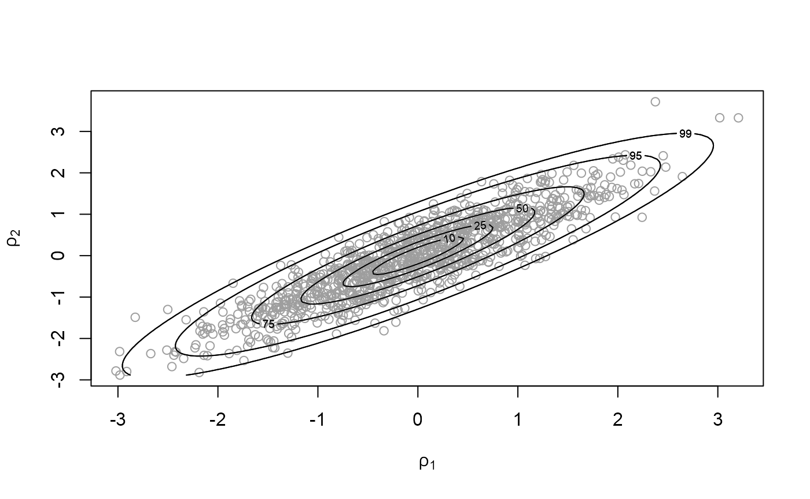
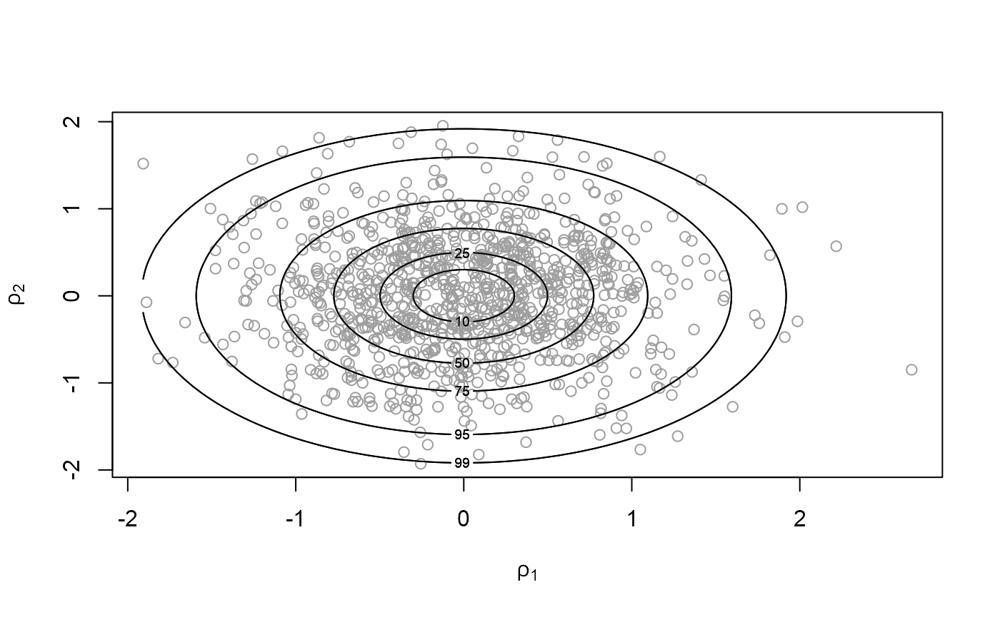
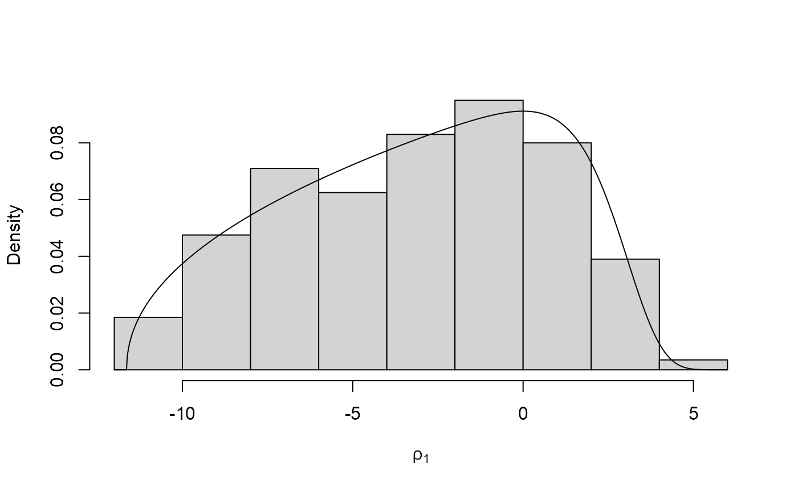

EVA 2021 revdbayes exercises 1
Ratio-of-uniforms using rust
Source:vignettes/ex1revdbayes.Rmd
ex1revdbayes.RmdGetting started
- Install RStudio Desktop (if you do not already have it) and open it
- Save ex1revdbayes.Rmd to your computer (there is also a link to it above)
- Open
ex1revdbayes.Rmdin Rstudio - The R code is arranged in chunks highlighted in grey
- You can run the code in a chunk by clicking on the green triangle on the top right of the chunk
- There is information about Exercises 1 (and Exercises 2) in the EVA2021 revdbayes slides
Aims
- Show the ROU method in action
- Use rotation and transformation to
- increase the probability of acceptance
- enable the ROU to be used in otherwise unsuitable cases
There is further information in the Introduction to rust vignette.
# We need the rust and mvtnorm packages
pkg <- c("rust", "mvtnorm")
pkg_list <- pkg[!pkg %in% installed.packages()[, "Package"]]
install.packages(pkg_list)## package 'mvtnorm' successfully unpacked and MD5 sums checked
##
## The downloaded binary packages are in
## C:\Users\Paul\AppData\Local\Temp\Rtmpi0zL9q\downloaded_packages## Warning: package 'mvtnorm' was built under R version 4.5.3
# Information about the ru() function
?ru
# Simulation sample size
n <- 10001D normal
# By default r = 1/2
# init is an initial estimate of the mode of logf
x1 <- ru(logf = dnorm, log = TRUE, d = 1, n = n, init = 0.1)
x1$pa## [1] 0.7949126
plot(x1)
# r = 1 will be slightly less efficient
x2 <- ru(logf = dnorm, log = TRUE, d = 1, n = n, init = 0.1, r = 1)
x2$pa## [1] 0.75757581D log-normal
# lower = 0 tells ru() that the log-normal is bounded below at 0
x1 <- ru(logf = dlnorm, log = TRUE, d = 1, n = n, lower = 0, init = 1)
x1$pa## [1] 0.5595971
plot(x1)
# We know that ln(X) is normal.
# First transform using a Box-Cox transformation with lambda=0 then simulate
lambda <- 0
x2 <- ru(logf = dlnorm, log = TRUE, d = 1, n = n, init = 0.1, trans = "BC",
lambda = lambda)
x2$pa## [1] 0.7898894
# Plot the (normal) distribution from which we have simulated using ROU
plot(x2, ru_scale = TRUE)
# A check that the inverse (exponential) transformation has been applied
plot(x2)
2D normal
# two-dimensional normal with positive association ----------------
rho <- 0.9
covmat <- matrix(c(1, rho, rho, 1), 2, 2)
x1 <- ru(logf = mvtnorm::dmvnorm, sigma = covmat, log = TRUE, d = 2, n = n,
init = c(0, 0), rotate = FALSE)
x2 <- ru(logf = mvtnorm::dmvnorm, sigma = covmat, log = TRUE, d = 2, n = n,
init = c(0, 0), rotate = TRUE)
c(x1$pa, x2$pa)## [1] 0.2331546 0.5271481
plot(x1, ru_scale = TRUE)
plot(x2, ru_scale = TRUE)
1D gamma
# Exponential case, with strong skewness
# A cube root transformation results in approximate symmetry
alpha <- 1
x1 <- ru(logf = dgamma, shape = alpha, log = TRUE, d = 1, n = n, trans = "BC",
lambda = 1/3, init = alpha)
x1$pa## [1] 0.8012821
# If alpha < 1 then the gamma density is extremely skewed and unbounded at 0
# A transformation can avoid this, but it needs to be stronger than a cube root
alpha <- 0.1
x2 <- ru(logf = dgamma, shape = alpha, log = TRUE, d = 1, n = n, trans = "BC",
lambda = 0.068, init = 0)
x2$pa## [1] 0.7662835
plot(x2)
plot(x2, ru_scale = TRUE)
Can you break rust?
# Pick a standard distribution
?Distributions
# Change dnorm to a d???? of your choice below
# Perhaps also set lower, upper or init
x <- ru(logf = dnorm, log = TRUE, n = n)## Warning in ru(logf = dnorm, log = TRUE, n = n): No initial estimate of the mode given: a vector of ones has
## been used